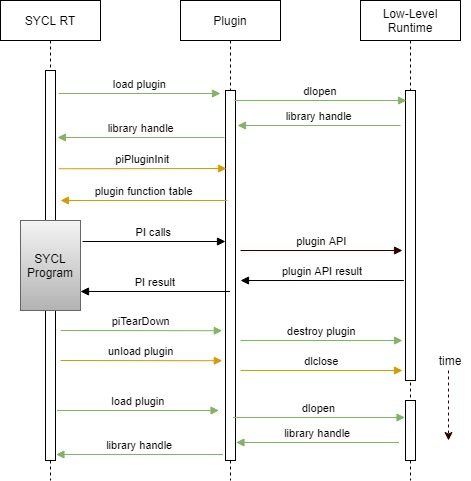

Global objects in DPC++ runtime¶
Intro¶
C++ standard does not specify the order in which global objects are constructed or destroyed. If global objects somehow interact with each other, there’s a chance, that one of the objects has not been initialized or has been destroyed by the time of interaction. This problem is also refered to as static initialization order fiasco.
The only two things C++ guarantees is that global objects are constructed before
program enters main and within one translation unit objects will be
constructed in the same order as they occur in code. Initialization order
between translation units is undefined.
At the same time, SYCL users may want to construct some SYCL objects globally, like in example below:
#include <sycl/sycl.hpp>
sycl::queue Queue;
int main() {
Queue = sycl::queue{sycl::default_selector_v};
return 0;
}
While the above piece of code is syntactically correct, it is still an undefined behavior from C++ standard point of view. There are a few places in the runtime, where global objects arise: scheduler, program manager, plugins, low-level runtimes. To prevent crashes in such scenarios, the DPC++ runtime must ensure global objects lifetime is long enough.
DPC++ runtime¶
General idea¶
Different platforms may handle global initialization and deinitialization differently (for example, see Itanium ABI). So, handling global objects lifetime is platform-dependent. However, there’s a common idea behind those approaches.
DPC++ wraps all complex global objects in a special structure, called
GlobalHandler. The runtime stores a global pointer to that structure, and
initializes it on first call to GlobalHandler::instance() method (singleton
pattern). The GlobalHandler provides getter methods to access different
objects. Those objects are stored in std::unique_ptrs, that are initialized
on first call to getter member function. This way DPC++ runtime ensures, that
no unwanted initialization happens before object is requested.
Deinitialization is platform-specific. Upon application shutdown, the DPC++
runtime frees memory pointed by GlobalHandler global pointer, which triggers
destruction of nested std::unique_ptrs.
Linux¶
On Linux DPC++ runtime uses __attribute__((destructor)) property with low
priority value 110. This approach does not guarantee, that GlobalHandler
destructor is the last thing to run, as user code may contain a similar function
with the same priority value. At the same time, users may specify priorities
within [101, 109] range in order to run destructor after SYCL runtime has been
de-initialized. A destructor without specific priority value is going to be
executed before runtime shutdown mechanisms.
Another approach would be to leak global objects. This would guarantee user,
that global objects live long enough. But some global objects allocate heap
memory. If user application uses dlopen and dlclose on libsycl.so many
times, the memory leak may impact code performance.
Windows¶
To identify shutdown moment on Windows, DPC++ runtime uses default DllMain
function with DLL_PROCESS_DETACH reason. This guarantees, that global objects
deinitialization happens right before sycl.dll is unloaded from process
address space.
Recommendations for DPC++ runtime developers¶
There are a few things to keep in mind, when developing DPC++ runtime:
It is fine to have global objects with trivial constructor and destructor. These objects can be zero initialized, and there’s no deinitialization procedure for such objects. This is why
int,bool, and other objects of trivial types are not wrapped withGlobalHandler.std::mutexis not guaranteed to be trivial. Either wrap it withGlobalHandleror consider usingsycl::detail::SpinLock, which has trivial constructor and destructor.
Plugins¶
Plugin lifetime is managed by utilizing piPluginInit() and piTearDown(). GlobalHandler::shutdown() will tear down all registered globals before SYCL RT library is unloaded. It will invoke piTearDown() and unload() for each plugin. piTearDown() is going to perform any necessary tear-down process at the plugin PI level. These two APIs allow on-demand plugin lifetime management. SYCL RT can control the beginning and the end of the plugin.

Low-level runtimes¶
Generally, DPC++ runtime has no control over its dependencies. Such libraries can have global objects of their own. If you observe problems with dependency library, please, report it to library maintainers.